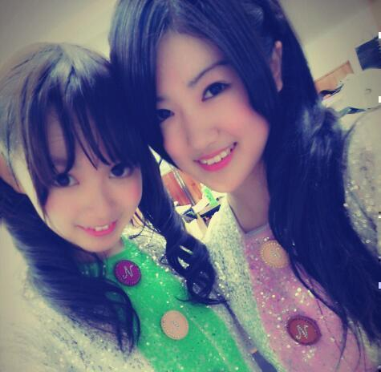

| 2012/10 24 Wed | ひめたん(*>ω<*)そ の219 |
質問ありがとうー！
なんかタイムリーで、
質問返しが楽ちんになったよー
見落としもなくなったしね(*^^*)
今日ちょーっと答えたよ
続きはまた明日おたのしみにねー♪
ちまのねブログにね、
ひめたんが出てきたのよ∩^ω^∩
わーいわーい
ちまの肩で添い寝してたーとか
ブログ読んで始めて知ったんだけど
ちょっと起きた瞬間にゆって///
んでね
ひめたんはちまのお姉さんだよーって
書いてくれてたのが嬉しくて
ひめたんは今日から
ちまのお姉たまになるー！
ってゆったらね
うん(*^^*)
でもねたまに妹ちゃんの時もあるの
ってさー
かわゆーい///ちま大好きー///
てことで昨日からひめたんは
ちまのお姉たま件いもたんに
なーりまーしたっ
うらやましいでしょー＊
姉妹たん∩^ω^∩あせあせまえがみー


 ひめたんは今年おでん食べた？おでんの具の中では何が好き？？
ひめたんは今年おでん食べた？おでんの具の中では何が好き？？
まだ食べてないやー
もうそんな季節なのね(*^^*)
厚揚げ、白滝さん！
GReeeeNで一番好きな曲ってなに〜??
旅立ち、またね。、空への手紙、愛唄
やー良い曲ばっかで困っちゃっちゃう
最近の曲だとオレンジとかもすき＊
個別で直接応援したいんだけど、歳上でも暖かく迎えてくれる!?
わーいわーい\(^^)/*
嬉しいな嬉しいな。
ありがとう待ってるね！
ひめたんビームをこの前の握手会で受けたんだけど、2回目受けに行っても良いかな？
かもーん何回でも受け付けるわ(<・ω・>)
 ひめたんにとっての乃木坂での妹たまは誰ー？
ひめたんにとっての乃木坂での妹たまは誰ー？
ひなちましかー(*^^*)
芸人目指してる男子どう思う?
夢に向かって頑張ってるの
かっくいーと思う！
いつか共演しましょーう∩^ω^∩
握手会の時にひめたんのとこに初めてだけどいっていい?
やーん嬉しいよー///待ってる！
ひめたんはなんでそんなにかわいいのかな？
なんてことを(｀・ω・´)
頑張ってもっともっと可愛くなるから、そしたら聞いてくださいな←
んでもおにゃのこはいっくらでもかわいくなれるよきっと＊ふふふ
ひめたんの真似をしたいのですが、ご本人から伝授...何をポイントにしたら似るでしょうか？
とりあえずびーむをマスターしましょう
さらにカエルさんとお話できるようになったらもう言うことないかなー♪
ひめたんみたいな人あんま会ったことないーってメンバーから言われるから
ちょっと難しいかもよ？
てか、ひめたんの真似なんてそんな...
なんか嬉しいよーありがとうー(´;ω;`)
ラブソングや泣ける歌教えてー笑
乃木坂の曲だったら
ハウス！、涙がまだ悲しみだった頃
とかがラブソング(*^^*)
ほかのアーティストさんだったら何だろう。
奥華子さんゆずさん素敵な歌詞よ！
ひめたん、ジェットコースターですごく強がってたけど、実は絶叫系苦手だったり？
そもそもあんましジェットコースター乗ったことなくて。
USJのジュラシックパークとかTDLのスプラッシュマウンテンとか楽しかったから、あたしは絶叫大丈夫な人なんかなーとか思ったんだけど
もうねー富士急は怖い怖すぎる(´;ω;`)
あんな過度のジェットコースターは無理だなーってことを知りましたねー
一度当ててみたい懸賞といえば？
図書券とか地味にほしいよね←
旅行券とかそんな贅沢は言わない。
ほらあひめたん
いい子だからさ(´・ω・｀)
ステージライブだと、 大きなダンスでキレキレ。
スタジオライブだと、 丁寧な綺麗なダンス。
というイメージを受けるんだけど、意識して変えてるんですか？
もちろん意識的に変えてますよ！
そりゃあその場所によって求められるものは違うからね◎
ひめかが乃木坂46の中の曲で1番好きな歌、ダンスしてて楽しい曲って何？
好きな曲は左胸の勇気、音が出ないギター
踊ってて楽しいのは会いたかったかもしれない、ぐるぐるカーテン
この前の長野のセトリすっきー(*>ω<*)
ひめちゃんは26日のZepp 東京のライブは出るの？
公式で発表あると思うーごめんね(´;ω;`)
今後アイドルとして、「一番伸ばしていきたい」ことは何？
まずはビジュアル。
もっと可愛くならなきゃってこーと♪
 岡山はひめたんの出身の広島の隣だけど今まで来たことある？
ひめたんわ岡山に来たことありますか？
岡山に来たことある? 岡山ってどんなイメージがある?
岡山はひめたんの出身の広島の隣だけど今まで来たことある？
ひめたんわ岡山に来たことありますか？
岡山に来たことある? 岡山ってどんなイメージがある?
ちっちゃい頃に家族でドライブした！
チボリ公園で遊んだの楽しかったよ(^^)
この夏1000媒体でもお邪魔しました
岡山といえばももたろさーん！
コンプレックスとかある？
そりゃあーねー(*^ω^*)ふふ
やべあ。
学校の体育大会のバラエティレースで
着ぐるみ着て走ることになりそう...
やーん足遅いのにプラス着ぐるみて
恥ずかしいわほんとにもー///
あ。
みなさんくれぐれも
風邪には気をつけてね
(＊´・ω・＊)ひめたん
コメント(136)
2012/10/24 00:06